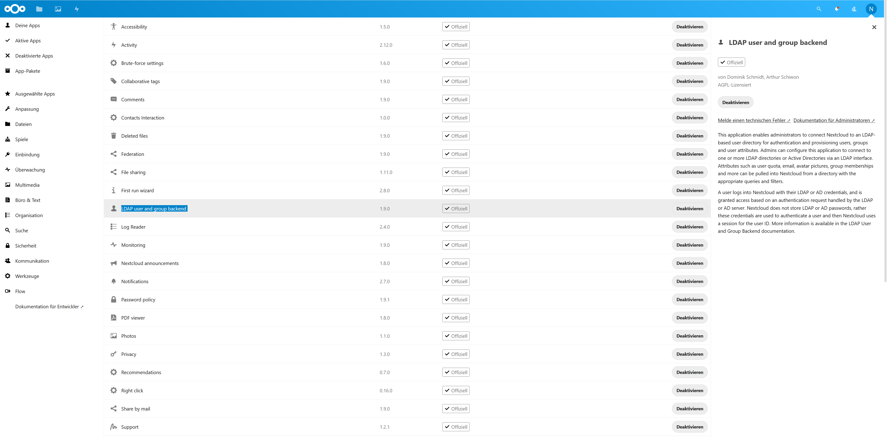
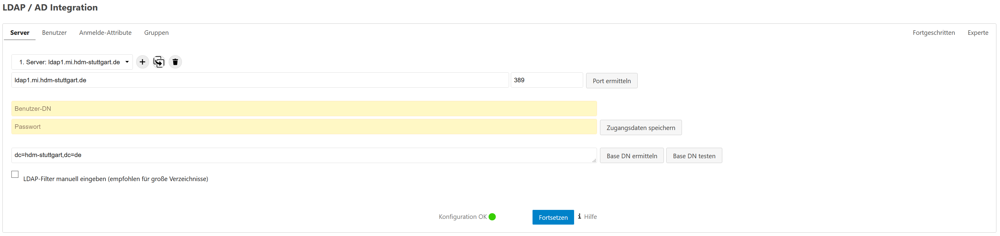
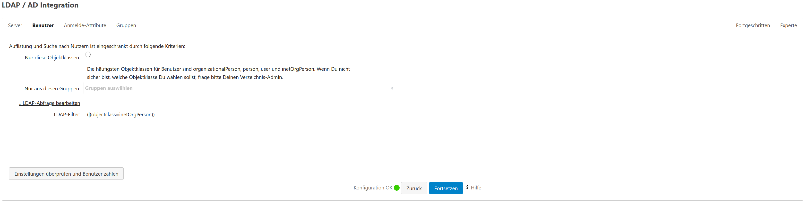
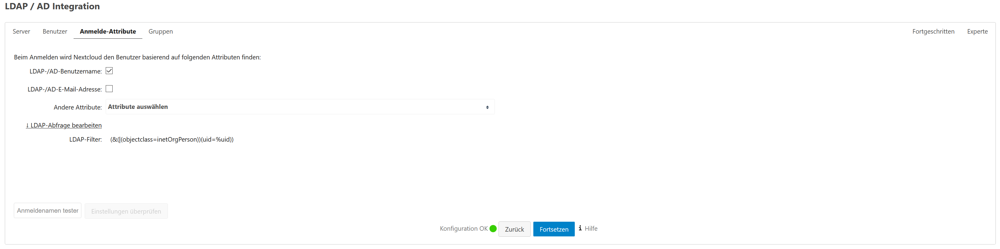
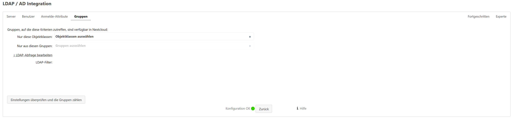
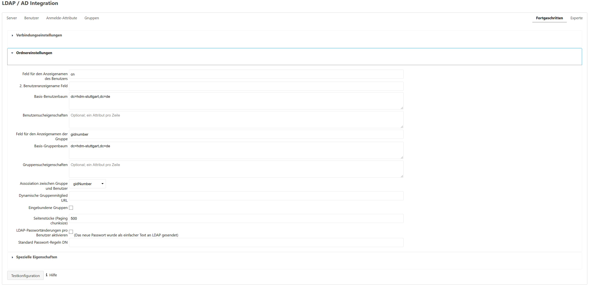
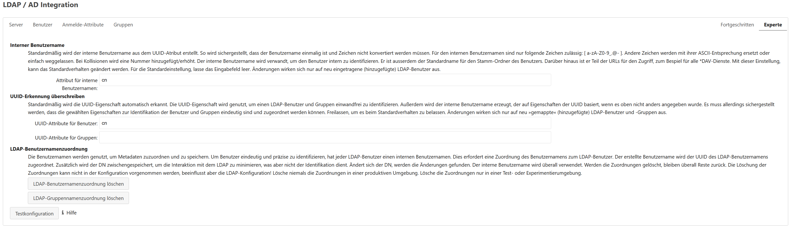

| 10. Adding LDAP support | ||
|---|---|---|
 | Chapter 5. File cloud | |
In this state, we could only login with the admin user created during the installation process. To make it possible to log in with our HdM usernames we added LDAP support and connected the LDAP server under ldap1.mi.hdm-stuttgart.de. To do this we logged in with the admin user and activated the "LDAP user and group backend" app:

Then we configured it as the following gallery shows:






Finally we could log in with our HdM credentials.